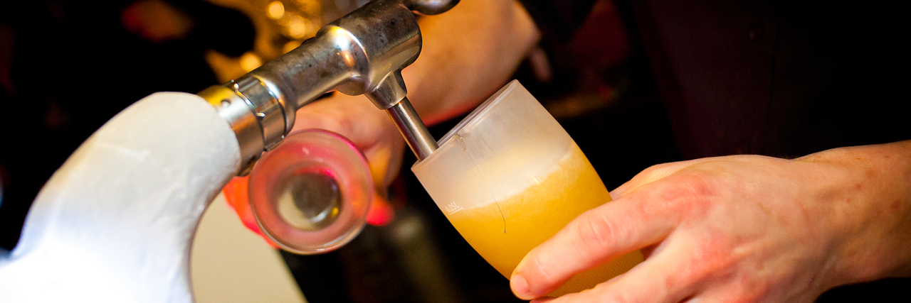

Waar en Wanneer?
Op zaterdag 19 september 2015 is het weer zo ver. Die dag zal er weer een groot Smetsenfeest zijn. Iedereen welkom in "Zaal de Keyt" vanaf 14 uur. Zaal de Keyt is gelegen te Kerkendijk 4, 3272 Messelbroek. Inschrijving vooraf is wel verplicht. Om 17u30 begint de BBQ. Indien je komt vragen we je ook weer om een naamkaartje van "de warme kant" te dragen.
Opgelet! Mensen die via Testelt rijden moeten een omleiding volgen. Kijk snel even welke route je moet volgen.
Inschrijven
Inschrijven is heel simpel. Schrijf voor 18 Augustus het juiste bedrag over naar het rekeningnummer dat je in de uitnodigingsmail vond. Vergeet in de mededeling niet de namen te vermelden. De bedragen zijn de volgende:
- Volwassenen: 23 euro
- Tot 12 jaar: 14 euro
- Tot 5 jaar: gratis
Helpen
Om zo'n groot feest te organiseren hebben we uiteraard een hele hoop helpende handen nodig (dat waren veel h's). Misschien kan jij ons wel met een van volgende zaken helpen.
Desserts
De ijskar kan deze keer niet te laat komen, want ze komt dit jaar niet. We doen immers een warme oproep om thuis een dessert te maken voor ong. 10 Ã 15 personen en mee te brengen. Zo geraken we hopelijk aan genoeg dessertjes. De kosten worden gedragen door de makers zelf. De overschot mag je zelf terug meenemen. Maak het dus zo lekker mogelijk, dan is zeker alles op.
Spellen
Er is een groot speelveld aanwezig. Breng dus gerust speelgoed en/of volksspelen mee.

Helpen op het Feest
Ook tijdens het feest zijn er allerlei dingen die moeten gebeuren. Kijk eens op de takenlijst en vul je naam in als je het ziet zitten om te helpen.
Route
De mensen die via Testelt naar het feest rijden moeten een kleine omleiding volgen. De Testeltsebaan in Messelbroek is namelijk onderbroken. In onderstaand kaartje kan je zien hoe je moet rijden.